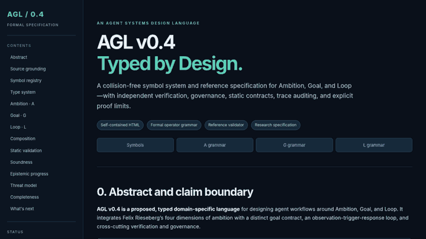
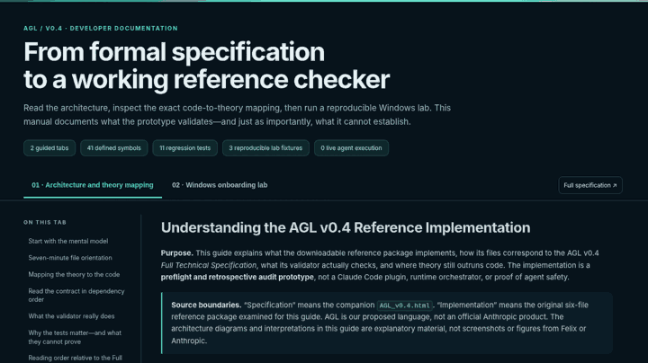

Ambition · Goal · Loop
Design better goals.
Execute with evidence.
Revisit intelligently.
A formal pattern language for outcome-oriented Claude workflows, with explicit verification and governance. Explore the technical specification or learn the reference implementation step by step.

Full technical specification ↗
Operator grammars, symbol registry, typing rules, and safety semantics.

Interactive onboarding ↗
Architecture mapping, Windows commands, and explanatory test labs.
Original sources: Felix Rieseberg · Jay's commentary · Ray's commentary.